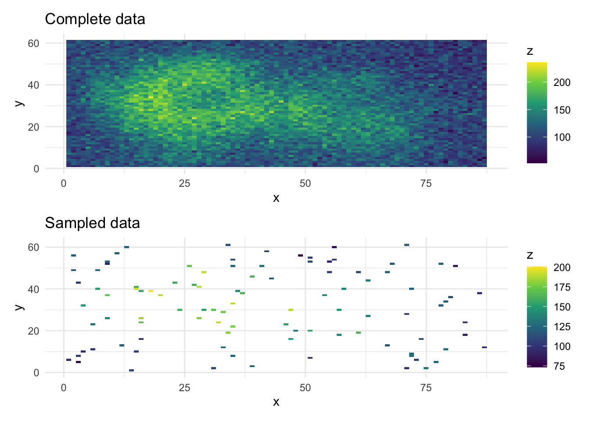

library(glmmTMB)
library(tmbstan)
library(dplyr)
library(ggplot2)
library(patchwork)
rstan_options(auto_write = TRUE)
options(mc.cores = parallel::detectCores())
rstan_options(threads_per_chain = 1) # does this help with glmmTMB?glmmTMB volcanos demonstration
1 Background
This demonstration is based upon the spatial covariance example from the glmmTMB vignette.
df <- data.frame(
x = as.vector(row(volcano)),
y = as.vector(col(volcano)),
z = as.vector(volcano) + rnorm(length(volcano), sd = 15)
)
# This is how the complete volcano data looks
complete_plot <- ggplot(df, aes(x = x, y = y, fill = z)) +
geom_tile() +
scale_fill_viridis_c() +
labs(title = "Complete data") +
theme_minimal()
df_sample <- dplyr::sample_n(df, 100)
partial_plot <- ggplot(df_sample, aes(x = x, y = y, fill = z)) +
geom_tile() +
scale_fill_viridis_c() +
labs(title = "Sampled data") +
theme_minimal()
complete_plot / partial_plot
df_sample <- df_sample |>
mutate(
pos = numFactor(x, y),
group = factor(rep(1, nrow(df_sample)))
)2 Inference with empirical Bayes and a Laplace approximation via TMB
# Fit the model using glmmTMB
fit_glmmtmb <- glmmTMB(z ~ 1 + exp(pos + 0 | group), data = df_sample)3 Inference with Hamiltonian Monte Carlo via tmbstan
# Use the same objective function to run inference with tmbstan
# fit_hmc <- tmbstan(fit_glmmtmb$obj, iter = 300)
# hmc_samples <- rstan::extract(fit_hmc)
#
# n_samples <- nrow(hmc_samples[[1]])
# par_names <- names(fit_glmmtmb$fit$par)
#
# tictoc::tic()
#
# hmc_newparam <- tidyr::expand_grid(i = 1:n_samples, par_name = unique(par_names)) |>
# mutate(newparam = purrr::map2(i, par_name, ~ as.matrix(hmc_samples[[.y]])[.x, ])) %>%
# group_by(i) |>
# summarise(newparam = list(unlist(newparam))) |>
# pull(newparam)
#
# hmc_pred_list <- purrr::map(hmc_newparam, function(.x) predict(fit_glmmtmb, type = "response", newparams = .x))
# hmc_pred_matrix <- do.call(rbind, hmc_pred_list)
# hmc_pred <- colMeans(hmc_pred_matrix)
#
# tictoc::toc()
#
# pred <- predict(fit_glmmtmb, type = "response")
#
# ggplot(data.frame(x = pred, y = hmc_pred), aes(x = x, y = y)) +
# geom_point() +
# coord_fixed() +
# lims(x = c(min(pred), max(pred)), y = c(min(pred), max(pred))) +
# geom_abline(intercept = 0, slope = 1, col = "grey", linetype = "dashed") +
# labs(x = "glmmTMB prediction", y = "tmbstan prediction") +
# theme_minimal()
#
# rhat <- bayesplot::rhat(fit_hmc)
# bayesplot::mcmc_rhat(rhat)
# rhat[order(rhat)]
#
# bayesplot::mcmc_trace(fit_hmc, pars = c("theta[1]", "theta[2]"))4 To-do
- Try priors
glmmTMBbranch. Currently having a hard time sampling from model without priors
5 Computing environment
sessionInfo()R version 4.3.2 (2023-10-31)
Platform: aarch64-apple-darwin20 (64-bit)
Running under: macOS Sonoma 14.2.1
Matrix products: default
BLAS: /Library/Frameworks/R.framework/Versions/4.3-arm64/Resources/lib/libRblas.0.dylib
LAPACK: /Library/Frameworks/R.framework/Versions/4.3-arm64/Resources/lib/libRlapack.dylib; LAPACK version 3.11.0
locale:
[1] en_US.UTF-8/en_US.UTF-8/en_US.UTF-8/C/en_US.UTF-8/en_US.UTF-8
time zone: Europe/London
tzcode source: internal
attached base packages:
[1] stats graphics grDevices utils datasets methods base
other attached packages:
[1] patchwork_1.2.0 ggplot2_3.4.4 dplyr_1.1.4 tmbstan_1.0.91
[5] rstan_2.32.5 StanHeaders_2.32.5 glmmTMB_1.1.8
loaded via a namespace (and not attached):
[1] utf8_1.2.4 generics_0.1.3 lattice_0.21-9
[4] lme4_1.1-35.1 digest_0.6.34 magrittr_2.0.3
[7] evaluate_0.23 grid_4.3.2 fastmap_1.1.1
[10] jsonlite_1.8.8 Matrix_1.6-5 pkgbuild_1.4.3
[13] gridExtra_2.3 mgcv_1.9-0 fansi_1.0.6
[16] viridisLite_0.4.2 QuickJSR_1.1.0 scales_1.3.0
[19] codetools_0.2-19 numDeriv_2016.8-1.1 cli_3.6.2
[22] rlang_1.1.3 munsell_0.5.0 splines_4.3.2
[25] withr_2.5.2 yaml_2.3.8 parallel_4.3.2
[28] tools_4.3.2 inline_0.3.19 nloptr_2.0.3
[31] minqa_1.2.6 colorspace_2.1-0 boot_1.3-28.1
[34] vctrs_0.6.5 R6_2.5.1 matrixStats_1.2.0
[37] stats4_4.3.2 lifecycle_1.0.4 htmlwidgets_1.6.4
[40] MASS_7.3-60 pkgconfig_2.0.3 RcppParallel_5.1.7
[43] pillar_1.9.0 gtable_0.3.4 loo_2.6.0
[46] glue_1.7.0 Rcpp_1.0.12 tidyselect_1.2.0
[49] xfun_0.41 tibble_3.2.1 rstudioapi_0.15.0
[52] knitr_1.45 farver_2.1.1 htmltools_0.5.7
[55] nlme_3.1-163 labeling_0.4.3 rmarkdown_2.25
[58] TMB_1.9.10 compiler_4.3.2